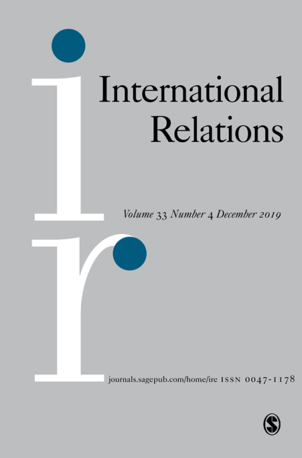
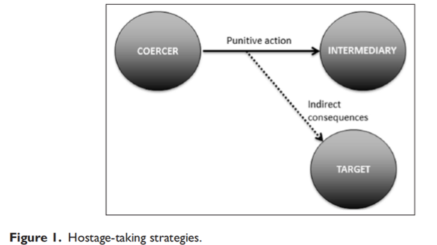
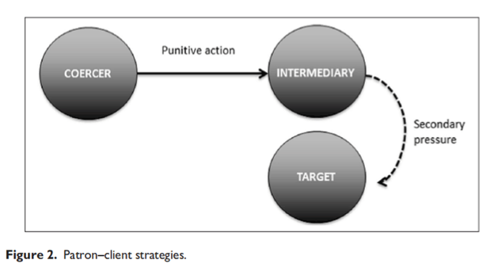
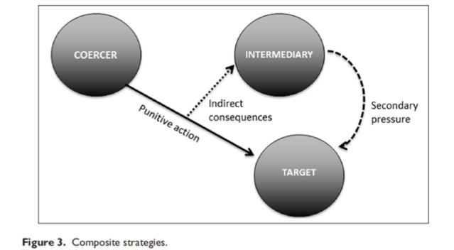

收录于合集 #理论研究 96个

作品简介
【作者】
Michal Smetana是斯坦福大学访问学者，查尔斯大学社会科学学院助理教授，布拉格和平研究中心协调专员。他的研究兴趣包括战争，核扩散，国际关系理论，安全研究及冲突研究。Jan Ludvik是查尔斯大学安全研究系的助理教授和安全政策中心的研究员。他的研究兴趣包括威慑理论和核战略，核扩散，战略理论，战略情报，经济战争，捷克和美国的安全政策。
【编译】 吴皓玥
【校对】 王川
【审核】 扎西旺姆
【排版】 高佳美
【来源】 __
Smetana, M., &Ludvik, J. (2019). Theorising indirect coercion: The logic of triangular strategies. International Relations , 33 (3), 455-474.
期刊介绍

《国际关系》（International Relations）是国际关系领域的顶尖期刊之一，由SAGE出版社与大卫·戴维斯纪念研究所（David Davies Memorial Institute）联合出版编辑。其2017年影响力因子为1.172，在“国际关系”类别的85种期刊中排名第43。
【理论研究】间接强制的理论化：三角战略的逻辑 Theorising indirect coercion:The logic of triangular strategies
Michal Smetana Jan Ludvik
内容提要
在国际政治中，国家经常利用强制性威胁迫使其他行为体屈服于它们的要求。尽管国际关系学者自该学科建立以来就一直关注国际政治中的强制问题，但现有的概念和理论可能是不充分的，因此有必要扩充我们的分析工具，以便充分了解当今世界的强制动态。作者在本文的目标是将间接强制这一概念理论化，此概念到目前为止还没有得到足够的学术关注。与传统一对一的强制交易不同，
间接强制的概念要求三个独立行为体参与特定的动态，其中一个特定行为体的战略选择受到对另一个行为体施加惩罚行为的威胁的影响。
作者从概念和实证的角度探讨了间接强制战略的三个子类型：“人质劫持”（hostage-taking）、“庇护”（patron-
client）和“复合”（composite）战略。在本文中，作者首先回顾了国际关系学科既有文献中有关三角强制战略的文献。其次，作者介绍了间接强制的一般特征，并详细阐述了他们对可信性调查（plausibility
probes）的运用。接下来，作者将上述三种间接强制战略的子类型概念化，并对每种战略进行简短的实证调查。最后，作者总结了他们的研究结论，并讨论了未来研究的可能路径。
文章导读
一、国际关系中的三角强制
在目前有关强制概念的国关文献中，大多数学者都接受托马斯·谢林（Thomas Schelling）对强制的定义，即“可以影响他人选择的潜在的暴力”，这种潜在的暴力通过表达一种“带来伤害或更多伤害的威胁”来实现目标行为体对强制国的要求的服从。相关战略通常被划分为威慑（deterrence）、威逼（compellence）或强制外交（coercive diplomacy）等类别，人们曾多次尝试为这些战略及其子类型建立不同的分类法，如报复性/防御性威慑（punishment/denial deterrence）、一般/即时威慑（general/immediate deterrence）、本土/延伸威慑（homeland/extended deterrence）或存在性/后存在性威慑（existential/post-existential deterrence）。
然而，在国关文献中，两个行为体之间的直接强制的动态一直占据主导地位。在这种直接强制的逻辑中，一个行为体向另一行为体发出威胁，让其调整自己的行为。威胁的实现通常会直接伤害另一行为体的公民、财富或领土。冷战期间，战略思想家们的主要关注点是美苏之间的相互威慑关系，在这种关系中，核武器的力量阻止了两个超级大国之间的全面战争。在核威慑和常规威慑的范围内，人们经常分析的其他二元关系包括美国- 中国、印度-巴基斯坦、以色列-埃及、英国-苏联、法国-苏联或美国-“流氓国家”。同样，研究威逼性威胁的学者通常关注国家之间的一对一关系。
在国际关系学科中，涉及三个行为体的强制动态的问题偶尔得到讨论。最突出的是，它处于有关美国延伸威慑可信度的辩论的前沿。作为一种强制战略，延伸威慑涉及劝阻对第三国（通常是盟国）或其领土使用武力。然而，与我们对间接强制的理解相反，在延伸威慑中，对武力的潜在使用是直接的——第一个行为体承担“保护者”的角色，保护第二个行为体（“被保护者”）不受第三个行为体的潜在攻击，而第三个行为体直接受到保护者的威胁。
间接强制的概念也不同于另一种基于三个或三个以上行为体之间相互作用的强制战略：轴心威慑（pivotal deterrence）。轴心威慑——或如罗伯特•杰维斯（Robert Jervis）所称的双重威慑（dual deterrence）——旨在防止敌对双方之间爆发战争。在这里，强制国扮演一个轴心角色，目的是阻止两个行为体同时攻击对方。这一概念类似于对两个行为体几乎同时使用两种延伸威慑战略，每一行为体在其中一种战略中都扮演被保护者的角色。因此，在这个概念中，威胁的使用仍是直接的。类似的三角逻辑也在最近创立的“中间人交易”（brokered bargaining）理论中得到了强调，在该理论中，实力强大的第三方寻求在两个主要对手之间缓解危机。
在学术文献中已有一些初步但值得注意的努力，即通过间接强制逻辑的视角来分析某些事件。罗伯特·哈卡维（Robert Harkavy）创造了三角/间接威慑/威逼的概念，将其主要应用于地区情景，即“一个较弱的国家如果没有能力震慑一个强大且遥远的国家，可能会选择以核（或化学、生物、常规）武器还击一个较小、较近或相邻的国家”。丹尼尔·拜门（Daniel Byman）和马修·韦克斯曼（Matthew Waxman）使用“二阶强制”（second-order coercion）一词来描述由于强制国对目标行为体缺乏足够影响力，因此需要强制有能力的第三方来强制其目标行为体的情况。
在类似概念的逻辑下，基思·佩恩（Keith Payne）等人、什穆埃尔·巴尔（Shmuel Bar）和亚历克斯·威尔纳（Alex Wilner）研究了间接威慑所代表的通过对非国家行为体的保护国施加压力来威慑或威逼非国家行为体的情况。波阿斯·阿特兹利（BoazAtzili）和温蒂·派尔曼（Wendy Pearlman）在以下情况中使用“三元威慑（triadic deterrence）”的说法：一国对另一国使用惩罚和/或威胁来阻止它支持一个非国家行为体，如果不是威逼这个国停止援助该非国家行为体的话。类似的推理构成了克伦·弗莱曼（Keren Fraiman）提出的“传递性威逼”（transitive compellence）的概念基础，这是种针对基地国（base state）的强制战略，目的是应对居住在其边界内的暴力非国家行为体的威胁。最后，亚历山大·乔治（Alexander George）简要讨论了适用于冷战后国家内部冲突的几种可能战略之中的间接威慑。
三角、间接逻辑也存在于强制性隔离或“楔子战略”（wedge strategies）的战略研究文献中。楔子战略的目的是通过战略上的结盟来孤立对手。通过成功地在盟友之间插入“楔子”来施加强制性压力，使得强制的主要对象被削弱且变得更脆弱，例如伊拉克在海湾战争期间试图在美国和阿拉伯国家之间插入楔子。当楔子战略成功时，与强制国进行军事接触的预期成本上升，目标行为体就更易受到威胁的操纵。
上述所有间接战略可能都包括在所谓的“第四波”威慑研究内。尽管它们都有共同逻辑支撑，但概念和术语上的碎片化使学者无法对间接强制的机制进行系统的比较研究。从分析的角度来看，将三角强制战略统一到更连贯的框架中是有价值的。此外，以往的分析探讨都没有涵盖间接强制战略的全部范围。因此，有必要建立一个全面的、克服现有概念和术语碎片化的间接强制的类型学，概括不同的间接强制战略，并区分不同的子类型。
二、间接强制战略的逻辑
与二元的直接强制不同，间接强制的概念建立在三个独立行为体的强制动态这一基础之上。在这些动态中，特定行为体的战略选择受到针对另一行为体的惩罚行动的威胁的影响。 这三个行为体扮演不同的角色：强制国（ coercer ）、目标行为体（ target ）和中间行为体（ intermediary ）。 强制国的目的是维持（通过间接威慑）或改变（通过间接威逼）目标行为体的现状，目标行为体的行为应作为强制国的战略总体目标加以调整。虽然间接强制与直接强制具有相同逻辑，但直接强制与间接强制的区别在于第三个行为体，即中间行为体的参与。在间接强制中，强制国将中间行为体引入强制交易动态中，以增强其对目标行为体的影响力。在成功的直接强制中，目标行为体服从强制国的要求，是为了避免强制国威胁采取惩罚行动的直接后果。 在成功的间接强制中，目标行为体服从强制国的要求，是为了避免强制国威胁要对中间行为体采取惩罚行动的间接后果，或是源于中间行为体为了回应强制国的威胁所施加的二次压力（ secondary pressure ）。 作者区分了间接强制战略的三种子类型：人质劫持、庇护和复合战略。这三种类型的区别由强制国对目标行为体和中间行为体的威胁计划的差异构成：惩罚行动的动向（即直接后果），以及间接后果和二次压力的不同作用。作者将在以下三个部分中进一步概念化各个子类型。除了概念上的阐述，作者还在三个简短的实证案例研究中论证了间接强制的一般逻辑，以及它的每个子类型的特殊机制。这些案例研究的实行是由亨利·埃克斯坦（Harry Eckstein）提出的可信性调查的逻辑决定的。这些可行性调查试图实现两个主要目标。首先，它们应证明，作者概念化的实证案例在世界政治中存在，然后才能在更详细的研究设计中进行严格测试。其次，它们应该以经验来说明在每个子类型中概述的强制机制，从而表明这些机制的逻辑在现实世界的案例中是成立的。为此，作者选择了三个代表间接强制的成功实例的案例，即强制国关于目标行为体的战略目标已经实现（至少部分实现）。在每个实证调查中，作者的目标是确定与间接强制的概念相对应的以下元素：1.行为体：三个独立行为体分别承担上述强制国、中间行为体、目标行为体这三个角色；2.威胁：威慑性或威逼性威胁的声明的表述（默示的或明确的），以及惩罚行动的可能动向。3.间接后果：对于目标行为体（第一类）或中间行为体（第三类）来说可信的间接后果；4.动机、能力和意图：强制国参与间接强制动态的战略动机、能力和意图；5.直接强制的可行性：强制国使用直接而非间接强制战略达到预期目标的能力；6.对意图的认知：目标行为体和中间行为体对强制意图的认知；7.二次压力：二次压力的执行（第二、三类）；8.服从：对威胁（不）服从的程度。
三、第一类间接强制：人质劫持战略
在第一类间接强制中，强制国威胁对中间行为体采取惩罚行动，除非目标行为体服从强制国的要求。如果用人质劫持的类比来说明这一逻辑，那么就是 中间行为体被强制国“劫持”，而目标行为体的行为决定了中间行为体遭受的伤害。虽然威胁的惩罚行动将直接影响中间行为体，但这种惩罚行动的间接后果仍将损害目标行为体的利益（见图 1 ）。

在国际政治中，这些间接后果大多与联盟承诺和对使用武力造成的地区不稳定的担忧有关。强制国对较弱/较近的中间行为体使用武力威胁来影响较强/较远的目标行为体，这些目标行为体关心中间行为体的福祉或特别关心在地区范围内惩罚行动的负面后果。这一战略在地区性的危机情景中尤其具有经验性意义，在这种情景下，一个地区大国威胁到与一个全球大国相邻的盟友/被保护国。这个地区大国往往无法直接接触到实力更强的对手，但它可以选择间接战略。作者以上世纪90年代的朝核危机为例，探讨这一概念的可信性。1994年，国际原子能机构调查人员发现，朝鲜关于宁边核反应堆运行情况的报告存在矛盾，随后朝鲜半岛爆发了一场严重危机。这场危机持续了近三年。几次危机的升级都被有希望的外交手段击退，结果又陷入危机。与此同时，朝鲜的行为疏远了大多国际社会的成员，到1994年春，美国设法建立了一个联盟，可能会成功地对朝鲜实施联合国制裁。然而，华盛顿的决策者们也严肃地讨论了军事打击朝鲜核设施的可能性。朝鲜人并没有坐以待毙。他们宣称，制裁将等同于战争，并威胁韩国将“把首尔变成火海”。在这场危机中阻止美国军事打击的必要，为间接的“人质劫持”战略提供了依据：1.行为体：朝鲜是强制国，美国是目标行为体，韩国是中间行为体。这三个行为体都充分独立于彼此。尽管韩国可以游说美国改变其政策，但面对朝鲜的威胁，它无法阻止美国对朝鲜的攻击。2.威胁：朝鲜反复传达针对韩国采取惩罚行动的威慑性威胁，表明其行动会给美国带来间接后果。最明确的是，在危机期间，朝鲜人曾警告美国人：“我们不会给你们时间在朝鲜周围集结军队攻击我们。我们不会首先进攻韩国，但如果你们确定要进攻，那么我们就进攻。”3.间接后果：虽然朝鲜的惩罚行动会对韩国造成伤害，但美国将不得不承担其间接后果。从美国决策者的角度来看，美国将为未能保护首尔而负责，并将朝鲜半岛拖入另一场大规模战争。4.动机、能力和意图：美国对朝鲜核计划的预防性空袭被平壤方面视为存在的安全威胁。随后，朝鲜有关威胁的明确措辞表明了其参与第一类间接强制的明确意图。朝鲜人民军的战略姿态提供了通过对首尔的间接威胁来威胁美国的必要能力。20世纪80年代，朝鲜军队虽然已被废弃，但仍采取了进攻姿态，其主力部队被预先部署在与韩国接壤的边境附近。韩国迅速发展、人口密集的首都首尔处于朝鲜大炮的射程之内，但它没有足够的反炮兵雷达（counter- battery radar）保护。5.直接强制的可行性：当时对朝鲜来说，直接威慑美国不是一个可行选择，因为它只能对美国的目标造成非常有限的损害。尽管朝鲜部署了大量武装力量，但它相对于美国的军事地位岌岌可危。因此，1994年，平壤方面不得不依赖一种间接威慑战略，威胁要报复美国在该地区的盟友（最重要的是韩国）——当时，这是一种必要的战略，而非选择性战略。6.对意图的认知：美国人和韩国人都认为，朝鲜对韩国的威胁是对美国行动的一种有意的间接威慑，而不是一种简单的针对韩国战略行动的直接威胁。7.二次压力：在作者提出的概念中，二次压力的逻辑只适用于第二类和第三类间接强制战略。8.顺从：美国顺从了朝鲜的要求。当白宫讨论军事局势时，他们决定，除非美国消除朝鲜对韩国的威胁，否则不会对朝鲜采取任何军事行动。
四、第二类间接强制：庇护战略
在第二类间接强制中，强制国还威胁要对中间行为体采取惩罚措施；换句话说， 中间行为体是强制国强制压力——（潜在的）使用武力——的直接接受国。然而，强制国并不一定像人质劫持战略那样，希望目标行为体会受到预期内对中间行为体采取惩罚行动的间接后果的影响。相反，强制国希望，中间行为体对目标行为体有着重要影响力，并能利用这种影响力——作为“二次压力”——来调整目标行为体的行为，以避免针对自身的惩罚行动（见图 2 ）。 这种二次压力并不一定需要采取惩罚行动的形式，而是可以由正向激励或威胁与奖励结合组成。

在国际政治中，第二类的间接强制通常是基于中间行为体和目标行为体间的庇护- 从属关系。即使是最强大的国家有时也没有足够的影响力或必要的信息以传统方式成功地威胁某些行为体。因此，强制国不能（或不愿）直接对目标行为体进行战略强制，而是威胁对中间行为体使用武力，除非中间行为体使用其对目标行为体的影响力来满足强制国的要求。庇护- 从属关系可以在两个主权国家之间发展，如美国和俄罗斯与其从属国的关系。然而，作者的初步调查发现，第二类间接强制最常应用于缺乏明确地理界定空间的暴力非国家行为体、失败国家、“准国家”或有着“非理性”领导的“流氓”国家。庇护- 从属的逻辑使这一战略甚至适用于威慑或威逼那些在主流威慑理论中有时被认为是“不可强制的”行为体，如恐怖主义集团及组织网络。作者从土耳其和躲避在叙利亚的库尔德工人党武装分子在20世纪90年代发生冲突的实证案例中，探讨这一概念的可信性。库尔德工人党成立于20世纪70年代，其目标是在中东建立一个独立的库尔德斯坦。在接下来的几十年里，库尔德工人党与土耳其政府进行了武装斗争。安卡拉的反叛乱行动最终将该组织赶出了土耳其东南部，结果这一组织却在邻国叙利亚找到了一个安全的避难所。土耳其说服叙利亚将武装分子驱逐出其领土的外交努力最终以失败告终。因此，土耳其在上世纪90年代转而使用强制战略。1992年的第一次强制尝试使得土耳其和叙利亚签署了一项安全议定书。叙利亚正式宣布库尔德工人党为非法组织，并承诺将其驱逐出叙利亚领土。然而，令土耳其感到沮丧的是，叙利亚当局没有执行该协定，库尔德工人党对土耳其的攻击不久又重新开始。随后在1996年，又一轮强制继续。然而，土耳其暗示可能使用武力，甚至在叙利亚边境增加军事存在，都没有产生预期效果。1998年10月危机期间，情况发生了变化，土耳其最终通过采用间接的“庇护”强制战略实现了其目标：1.行为体：为了对库尔德工人党（目标行为体）施加二次压力，而土耳其（强制国）又无法在外国领土发起直接行动，因此它参与间接强制动态，暗示可能对叙利亚使用武力（中间行为体）。2.威胁：1998年10月，土耳其对叙利亚发出了几次口头威胁。这些措辞强硬的声明暗示，除非叙利亚政府除掉库尔德工人党，特别是其领导人阿卜杜拉·奥贾兰（Abdullah Ocala），否则将对叙利亚采取军事手段进行惩罚。土耳其还在与叙利亚接壤的边境地区调动军队，并通过第三方渠道（主要是美国和埃及）传达其威胁的含义。此外，土耳其还采取了强制性“大棒”加“胡萝卜”的政策，承诺如果叙利亚遵守承诺，双方关系将得到改善。3.间接后果：间接后果的强制逻辑仅适用于第一类和第三类间接强制战略。4.动机、能力和意图：土耳其强烈希望以任何必要手段处理库尔德工人党问题；事实上，在20世纪90年代，库尔德工人党被提升为土耳其武装部队的首要安全威胁。在这种情况下，清除在叙利亚的库尔德工人党组织网络是土耳其反对该组织的战略重点。土耳其还解散了一支规模可观的军队，并得以将其军事力量投射到邻国叙利亚。土耳其的三角强制意图在威胁的口头表述中被明确地暗示出来，并通过第三方沟通渠道以这种方式表达出来。5.直接胁迫的可行性：在这种情况下——在伊拉克北部库尔德工人党基地也是类似的情况——土耳其发现，与直接战略相比，间接战略更有效也更经济。叙利亚作为基地国更适合对付库尔德工人党，而土耳其能够通过叙利亚以相对较低的成本实现其目标。6.对意图的认知：虽然很难评估库尔德工人党的认知，但叙利亚政府清楚地接收到并理解了强制信息的内容，甚至讨论了在叙利亚不顺从的情况下与土耳其发生全面军事冲突的可能性。此外，叙利亚还考虑到土耳其提出的外交和经济上的优惠条件，并将其与军事对抗的前景作了比较；正如比尔·帕克（Bill Park）所指出的，“作为一个破产和孤立的叙利亚，土耳其的友谊之手极具诱惑力，它提供了一个机会，来削弱土耳其和以色列联合施压的前景。”7.二次压力：在土耳其的军事威胁下，叙利亚通过直接行动（逮捕库尔德工人党成员，驱逐其领导人，拆除营地）和强制压力（迫使剩下的库尔德工人党成员离开这个国家，并以迫害相威胁，制止库尔德工人党在其领土上进一步活动）对库尔德工人党施加了二次压力。8.顺从：叙利亚决定通过伊朗和埃及的沟通渠道顺应土耳其的威胁。在1998年10月20日两国代表签署的《阿达纳协定》中，叙利亚证实，奥贾兰已不在其领土上，且不被允许返回；库尔德工人党被叙利亚当局认定为恐怖组织，许多库尔德工人党成员被逮捕，库尔德工人党营地也不再运作。即使奥贾兰没有像安卡拉最初要求的那样直接被移交给土耳其当局，但很明显，叙利亚基本上顺从了土耳其的要求。
五、第三类间接强制：复合战略
第三类间接强制在某种程度上融合了前两种战略的概念基础。 强制国威胁要对目标行为体采取惩罚行动，但并不指望这足以改变目标行为体的政策。相反，强制国希望惩罚行动的间接后果将会损害中间行为体珍视的事物或将中间行为体拖入冲突。因此，中间行为体会施加二次压力，使目标行为体顺从强制国的要求，从而避免次优结果（见图 3 ）。

在国际政治中，复合战略是与直接强制结合使用的，以获得对目标行为体的额外影响力。在各种危机情况下，威胁采取惩罚行动可能根本不是影响目标行为体战略选择的充分或最划算的方式。因此，强制国的目标是将第三个行为体（通常是对目标行为体有实际影响力的国家）拖入交易游戏。中间行为体的动机通常是担心最终的暴力可能会蔓延并使其陷入一场不必要的军事冲突，或者对目标行为体使用武力会对中间行为体产生一些其他在安全、经济或政治上的负面影响。作者以1938年纳粹德国和捷克斯洛伐克之间的苏台德危机为例，以法国和英国为中间行为体来探讨这一概念。1938年的捷克斯洛伐克危机以声名狼藉的《慕尼黑协定》告终。1938年3月吞并奥地利后，希特勒以保护居住在边境地区的德国人为借口，加大了对捷克斯洛伐克的压力。按照元首的指示，苏台德地区德国人的亲纳粹代表对布拉格政府提出了更高的要求。4月，苏台德的德国人提出了一系列新的要求，包括由亲纳粹的当地德国人控制边境地区。关于可能入侵的谣言正在流传。然而，与后来的发展形成对比的是，捷克斯洛伐克甚至没有考虑放弃。5月，捷克斯洛伐克军队虚张声势地召集后备役军人，做好了入侵的准备，他们相信法国和英国将提供急需的帮助。5月的动员让希特勒措手不及，激怒了他，也让他失去了自信。如果捷克斯洛伐克准备好了战斗，他几乎无法对其施加进一步的直接压力。相反，希特勒的新计划依靠的是一种强制孤立的战略，目的是把捷克斯洛伐克从西方盟国中分离出来。为了施加额外的压力，希特勒还决定让捷克斯洛伐克的西方盟友——英国和法国——参与一项复合间接战略：1.行为体：德国（强制国）希望通过英国和法国（中间行为体）施加的二次压力影响捷克斯洛伐克（目标行为体）的战略选择；所有的行为体在给定的强制交易动态中都是足够独立的。2.威胁：德国为捷克斯洛伐克制定了相当明确的强制威胁，即威胁要用武力占领其边境地区，除非捷克斯洛伐克把苏台德地区交给德国。在1938年的整个夏天和初秋，德国人转而与英国人谈判。在这些谈判中，希特勒不断宣布，除非英国和法国迫使捷克斯洛伐克同意他的要求，否则他准备对捷克斯洛伐克使用武力。希特勒利用一切机会提醒西方列强，这样的战争可能会蔓延开来，而且他从未忘记让布拉格放心，如果伦敦和巴黎说服布拉格，就不会有战争。3.间接后果：与对捷克斯洛伐克的威胁相比，德国对西方盟国的威胁仅限于可能发生的捷克- 德国战争的间接后果，希特勒表明，这场战争很容易就会蔓延开来，把法国和英国拖入战争。这两个中间行为体受到可能陷入军事冲突的潜在威胁——这可能是德国在捷克斯洛伐克不顺从的情况下采取惩罚行动的间接后果。4.动机、能力和意图：在前几次直接强制捷克斯洛伐克的尝试失败后，德国有动机进行间接强制。尽管德国人很可能有能力用蛮力夺取他们想要的东西，但这不足以强制捷克斯洛伐克。对捷克斯洛伐克施加的直接压力的下降和5月危机后德国与英国外交关系的加强表明，德国从直接战略转向间接战略是一种有意的战略。如果不是受到来自法国和英国对捷克斯洛伐克的二次压力，捷克斯洛伐克可能会违抗希特勒的要求。5.直接强制的可行性：早期直接强制捷克斯洛伐克的尝试是徒劳的。正如捷克斯洛伐克对5月可能到来的入侵的反应所展示的那样，尽管几乎没人相信捷克斯洛伐克能够击退德国的大规模进攻，但即便是可信的惩罚行动威胁，也不足以征服捷克斯洛伐克。6.对意图的认知：西方盟国和捷克斯洛伐克都明白，希特勒的强制企图是有意的。分歧在于希特勒野心的最终程度；德国的野心是否会因为捷克斯洛伐克的德语区并入德国而得到满足，或者希特勒的强制战略是否会继续下去。7.二次压力：在慕尼黑会议之前的几个月里，捷克斯洛伐克受到的来自英国和法国的间接压力比来自德国的直接压力更大。这两个中间行为体主要通过在军事升级的情况下以“抛弃（abandonment）”的威胁来施加二次压力。最值得注意的是，在危机最严重的时候，英国和法国大使向捷克斯洛伐克总统贝内斯（Benes）发出了最后通牒，要求他接受德国的要求。8.顺从：希特勒最终通过巧妙运用间接强制战略实现了他的大部分目标，这一战略尤其引起了英国首相内维尔·张伯伦（Neville Chamberlain）的共鸣。因此，在英国和法国的二次压力下，捷克斯洛伐克顺从了德国的要求，交出了边界地区。从历史记录来看，只有在英国和法国充当中间行为体的情况下，德国才取得了关键的强制影响力——这一战略最终为希特勒带来了另一场不流血的胜利。
六、结论
基于初步的实证调查，作者发现了几个有趣的观察结果，对于探讨此概念在世界政治中适用性的学者来说，这些观察结果值得进一步关注。 首先，为了理解国家如何以及为何选择特定的强制手段，研究强制国选择间接强制而非直接强制的理由是有价值的。 由于缺乏其他选择，强制国可以选择间接强制，例如1994年朝鲜的情况。威胁目标行为体的盟友而不是目标行为体，对一个缺乏直接到达目标行为体领土这一选择的小国来说是绝对必要的。在庇护- 从属关系中，由于无法通过直接威胁找到或影响恐怖组织，强制国通常会转而威胁该组织的赞助国——例如20世纪90年代的土耳其和库尔德工人党。然而，间接威胁目标行为体有时可能只是更有效或风险更低的方法。间接强制也可以是一种战略选择，而不是必须的。这似乎特别符合复合间接强制的情况，在这种情况下，间接威胁往往是对直接强制的“传统”使用的补充。 另一组问题是威胁和强制国的决心是如何表明并传递给目标行为体的。 在直接强制中，信号（无论是默示的还是口头的）直接从强制国发送到目标行为体；潜在的第三方通常只是作为一个信使，一个方便或必要的沟通渠道。在间接强制战略中，信号传递可能变得更复杂，特别是在人质劫持和复合间接强制中。在这两种情况下，威胁需要暗示会分别对目标行为体或中间行为体产生消极的间接后果。各国如何可信地向间接强制的目标行为体传达其行动的间接后果？它们使用什么战略吸引第三方行为体参与二次压力的动态变化？这些方法更广泛的政治成本（和机会）是什么? 最后，作者发现非常有趣的是行为体改变政策的动机，即使威胁的惩罚行动不是针对它们自己。 在第一类实证案例中，美国及其亚洲盟友之间的强大联盟模式无疑在美国的决策过程中发挥了关键作用。但也许这并不是目标行为体最关心的。还有一种可能是，目标行为体关心的是不那么具体的间接后果，如由此造成的国际或区域秩序的不稳定，或对诸如“核禁忌”等国际规则的破坏，这些都会因强制国的惩罚行动而受到危害。或者，就像第三类案例中的苏台德危机一样，由于担心潜在的暴力外溢会把它们拖入军事冲突，行为体可以改变他们的政策。这些问题与关于联盟承诺可信度、延伸威慑以及国际危机中战略陷阱的危险等更广泛的国际关系辩论有关。这些问题的现实重要性远远超出了学术研究的象牙塔。因此，作者希望其对间接强制战略的概念化能为国际研究领域中由理论驱动的实证研究开辟新的路径，这反过来将增强我们对当代世界政治中的强制动态的理解，并可能产生相关的政策建议。
_ ** _ ** _ ** _ 本文由国政学人独家编译推荐，文章观点不代表本平台观点，转载请联系授权。**__